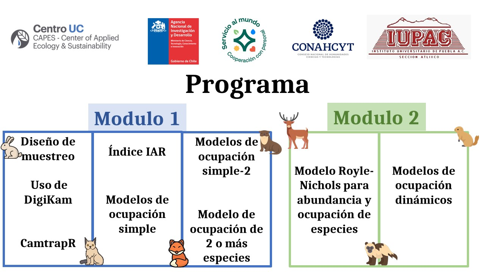

install.packages(c("camtrapR", # Camera Trap Data Management and Preparation of Occupancy and Spatial Capture-Recapture Analyses
"tidyverse", # Easily Install and Load the 'Tidyverse'
"leaflet", # Create Interactive Web Maps with the JavaScript ' Library
"sp", # Classes and Methods for Spatial Data
"ggtext", # Improved Text Rendering Support for 'ggplot2'
"AICcmodavg", # Model Selection and Multimodel Inference Based C(c)
"broom", # Convert Statistical Objects into Tidy Tibbles
"ggeffects", # Create Tidy Data Frames of Marginal Effects for from Model Outputs
"performance", # Assessment of Regression Models Performance
"unmarked", # Models for Data from Unmarked Animals
"MuMIn", # Multi-Model Inference
"usdm", # Uncertainty Analysis for Species Distribution Models
"GGally", # Extension to 'ggplot2
"patchwork", # The Composer of Plots
"ubms", # Bayess version of unmarked
"mgcv", # GAM to residuals occ model
"ncf", #correlograms
"tictoc",
"beepr",
"wiqid"
))Cámaras trampa en R
Procesamiento, Organización y Análisis de datos
Bienvenidos
Hola a todos bienvenidos al curso de Cámaras trampa en R: Procesamiento Organización y Análisis de datos de fototrampeo. En esta página encontrarán todas las instrucciones para llevar a cabo el curso.

Instrucciones
Instalar R y Rstudio
Casi todos los ejercicios del curso se desarrollarán en el lenguaje de programación R, usando la interfaz de Rstudio. Para varios paquetes es necesario tener instalado Rtools. Por último, también vamos a usar el programa DigiKam.
Para todos los detalles de como instalar el software por favor seguir la √©sta gu√≠a üîó link aqu√≠
Rtools
Para instalar Rtools simplemente dirígete a este enlace y sigue las instrucciones para instalar Rtools43
DigiKam
Para instalar DigiKam debes seguir los siguientes pasos:
Descarga: Ve a la siguiente dirección https://www.digikam.org/download/ y descarga el instalador que corresponda a tu sistema operativo.
Una vez descargado ábrelo y sigue las instrucciones. No es necesario cambiar las opciones por defecto, solo dar click en siguiente hasta que quede instalado y luego poner terminar.
Para más detalles o dudas puedes revisar el capítulo 2 del libro Fototrampeo en R: Organización y Análisis de Datos
Instalar paqueterías
Se espera que previo al curso instales las siguientes paqueterías
Descargar materiales
A continuación encontraras los link de descarga para los materiales (datos y scripts) que usaremos en el curso. Son carpetas comprimidas y recomiendo que las descargues y extraigas en la carpeta de tu preferencia antes de comenzar el curso
Día 1
Día 2
Día 3
Entidades patrocinadoras
Este curso fue posible gracias al apoyo del programa de Servicio al Mundo y la fundación Podion. La logística del evento es coordinada por el CAPES y con apoyo de ANID PIA/BASAL FB0002.